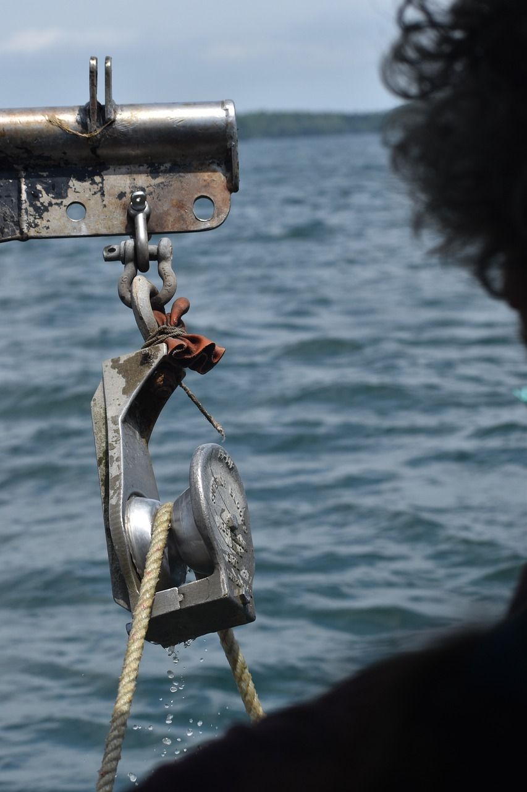

Our Heritage
Laird's Lobsters was founded in 1920 by Laird Masterson Sr. on the beautiful coast of York Beach, Maine. What started as a small shack serving fresh lobster to locals and tourists quickly gained popularity for its quality and commitment to service. This humble beginning laid the foundation for what would become a celebrated seafood institution.
Over the decades, Laird's Lobsters evolved into a full-service restaurant, expanding our menu to feature a wide range of seafood dishes, all sourced with the highest standards of freshness and sustainability. Our growth has been driven by our prime location and the enduring support of the community and visitors who appreciate our dedication to exceptional dining experiences.
Our Commitment
Today, we honor our founder’s vision by combining over 100 years of culinary tradition with modern techniques to offer an unparalleled dining experience. Our focus on sustainability includes contributing 10% of our profits to support families in need and providing over 10,000 meals annually to children facing food insecurity.
Laird's Lobsters remains dedicated to creating a lasting impact on our community while serving the finest seafood Maine has to offer.